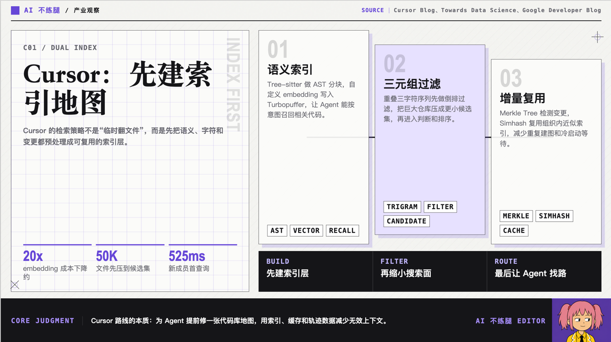
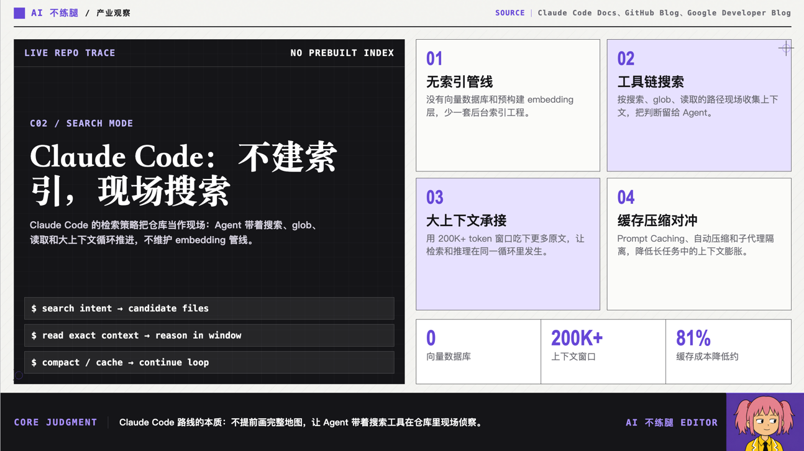
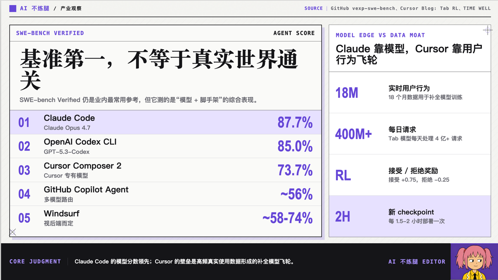
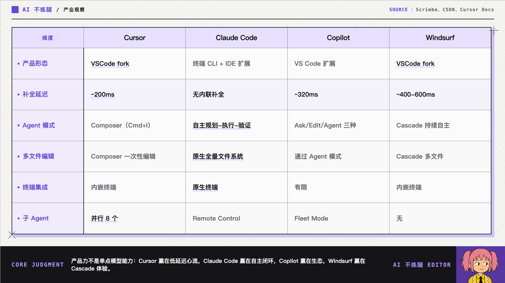

2023 年 3 月，Cursor 正式发布。
三年之后，它的年化收入已经超过 20 亿美元。再往后，21世纪的人类之光 一龙.马斯克，宣布以 600 亿美元全股票收购 Cursor 背后的 Anysphere。
Cursor 官方披露的数据也很离谱。2025 年 6 月，它的 ARR 刚超过 5 亿美元；到了当年 11 月，年化收入突破 10 亿美元；2026 年 3 月，外部报道显示这个数字又翻到了 20 亿美元。
但是，Cursor 如果说是牛逼，Claude Code 只能说是逆天。
今天让 Cursor 和 Claude Code 打擂台，就像常熟阿诺和阿诺打奥赛，有点误闯天家的意思了。
那么，开个脑洞。
如果 Claude Code 在 2024 年就扮演魔丸降世，Cursor 是不是根本坐不上今天这张桌子，只能端着塑料碗坐在旁边吃儿童套餐呢？
把时间拨回 2023 年。
那时候，大部分人使用 AI 的方式，还是在对话框里问它。
“鲁迅为什么暴打周树人？”
“用霸道总裁的语气写一封请假邮件。”
“阿凡题和威整天谁先表白的？”
AI 编程虽然已经出现，但市场上的主角基本只有 GitHub Copilot。
Copilot 在 2021 年进入技术预览，2022 年正式商业化。它的形态非常明确。藏在编辑器里，你写前半句，它猜后半句，或者补出一坨大便，端端正正堆在你的屎山代码上。
Cursor 真正抓住的，就是从“代码补全”到“开发工作流”之间的空白。
人家年轻的时候也有不讲武德的一面，直接 Fork 了 VS Code，把 AI 塞进编辑器的骨头缝里。代码索引、上下文检索、多文件编辑、Diff 展示、代码补全、Agent 执行，全部围绕 AI 重新设计。
这件事听起来没有今天的“harness”，“loop”性感，但在当时很有力气。
因为 2023 年的模型，智力水平一般，只比我好点有限。
你不能只给它一句“把这个项目改好”，然后就去睡觉，起来验收结果。
所以那个时代的 AI 应用竞争，不是谁的模型能够力大砖飞，而是谁能给这个智力偶尔掉线的模型修更多扶手、铺更多盲道、安装更多防撞护栏。
Cursor 的代码索引、上下文拼装和编辑器交互，就是这些护栏。

模型不够聪明，工程就得足够辛苦。
Cursor 早期真正的价值，不是“它拥有一个比别人更聪明的模型”。
而是它的工程能让当时还不够聪明的模型，看起来稍微像个能干活的人。
2025 年 2 月 24 日，魔丸降世。
Anthropic 在发布 Claude 3.7 Sonnet 的同一天，放出了 Claude Code 的研究预览版。
这一招，可以说是狠狠背刺了一把 Cursor。
OpenAI 是 Cursor 的投资人，但 Cursor 最终把默认模型从 OpenAI 切到了 Anthropic 的 Claude。而且网传 Anthropic 曾经向榜一大哥保证自己不会推出 Coding Agent。
朴实无华的商战，和初中生的三角恋一样狗血。
Claude Code 允许开发者直接在终端里，把完整的工程任务交给 Claude，而不是只让它补几行代码。几个月后的 5 月，Claude Code 正式进入 GA。
Claude Code 出现之后，很多人第一次意识到。
原来 AI 编程工具不一定非得长得像一个编辑器。
它可以就是一个黑乎乎的命令行窗口。产品也可以没有带劲的 GUI 交互设计，照样把活干漂亮了。
这不是最可气的。
Claude Code 还吹牛逼，说自己 “不要为今天的模型构建，要为六个月后的模型构建。”
这就是 Claude Code 著名的架构倾向。
“Search，Don’t Index。”
Claude Code 早期也尝试过 RAG 和本地向量数据库。后来团队发现，在模型能力足够强之后，让 Agent 直接使用搜索工具查找代码，效果往往更好。

让 Agent 像工程师一样，使用文件名匹配、文本搜索和直接读取，在执行过程中寻找自己需要的信息。
Cursor 更像给模型修了一座现代化机场。
Claude Code 则像是把一头会飞的霸王龙放在了空地上。
人家吹完牛逼，还真实现了，估计 Cursor 团队人当时已经麻了。
乍一看，Claude Code 的架构甚至有点寒酸。
模型决定下一步要调用什么工具，工具执行，把结果塞回上下文，然后模型继续决定下一步。
真正复杂的部分，是围绕这个循环搭建起来的权限控制、上下文压缩、会话管理、子 Agent、Hooks、Skills 和工具调用系统。
这种设计看上去极其优雅。
但有一个前提，就是模型必须足够聪明。
没有 Sonnet 3.7，Claude Code 可能也要走 Cursor 的老路，也许会研发出新的 RAG 解决方案，讲一个新的故事。

很多人把 Claude Code 的成功完全归功于架构。
这有点像看到奥尼尔在篮下把人撞飞，然后总结说。
他的成功主要来自细腻的脚步技术。
脚步当然重要。
但他妈的他有一百四十多公斤。
会成功，但不会这么猖狂。
首先，2024 年初的模型能力，还不足以让 Claude Code 形成后来那种碾压式体验。
Claude 3 系列直到 2024 年 3 月才发布。真正让行业明显感受到 Claude 编程能力跃迁的 3.5 Sonnet，要到当年 6 月才出现。
Cursor 依然可以凭借编辑器体验、代码补全、上下文索引和更成熟的人机协作方式，留住大量开发者。
毕竟并不是每个人都喜欢坐在终端里，对着一块黑屏幕跟 Agent 进行赛博摔跤。
Cursor 的 Tab 补全、内联编辑、可视化 Diff，以及人与 Agent 随时接管彼此工作的任务组交付和工作流嵌入体验，仍然构成了非常真实的壁垒。
Claude Code 更像一个能够独立接活的外包团队。
Cursor 则更像一套贴在工程师身上的机械外骨骼。
两者有竞争，但并不完全相同。
“只有 Cursor 能做到这件事。”
Cursor 在 2024 年到 2025 年的爆发，不只来自产品优秀，也来自稀缺性。
当市场第一次发现 AI 可以从补全几行代码，进化到修改整个项目时，Cursor 几乎就是那个最明确的答案。
如果 Anthropic 同期站在旁边，一边向 Cursor 收取 API 费用，一边用自己的 Claude Code 和它抢用户，这个场面就会非常雷霆。
据消息人士透露，Claude API 利润可以达到恐怖的 75%，只能说太野了。
Cursor 每获得一位付费用户，可能先给自己的竞争对手贡献一笔 Token 收入。
Cursor 在前面辛辛苦苦卖软件，Anthropic 在后面收保护费。
Cursor 依然可能做出十亿美元 ARR，但市场很难再相信它拥有一条完全独占的跑道。
到了 2026 年，Cursor 也开始自研模型，并发布了面向 Agent 软件工程的 Composer 2。
但 Cursor 很难在通用基础模型上，与 Anthropic 进行正面硬刚。
这不是工程师努不努力的问题。
一家应用公司和一家基础模型公司比谁的模型更强，就像一家火锅店决定自己种辣椒、养牛、炼油、造锅、搭房子。
Cursor 真正有机会建立的壁垒，始终是模型之外的东西。
开发者每天使用的编辑器入口，人与 Agent 协作的工作流程，海量真实编程任务产生的反馈数据闭环，以及企业开发流程中的权限、审查、测试和协作系统等烦人的 dirty work。

模型公司拥有智力。
Cursor 必须拥有工作。
谁掌握模型并不一定最重要。谁能够让模型稳定进入真实工作流，持续完成任务并获得反馈，才有可能保住应用层的位置。
这也是 Cursor 即使面对 Claude Code，收入仍然继续增长的原因。
即使 2026 年 Claude Code 都能帮忙五角大楼发射导弹了，也没能把 Cursor 打死。
回头看，Cursor 最大的幸运，可能不是 Claude Code 晚出生了一年。
而是 GitHub Copilot 在最应该进化的时候，宣布赛季报销了。
GitHub 拥有代码仓库、开发者账号、企业客户、编辑器生态和天然分发渠道。理论上，Cursor 后来做出的绝大部分东西，它都应该更早做出来。
但 GitHub Copilot 直到 2025 年 2 月，才正式推出 Agent Mode。
Cursor 已经在场上要拿到 MVP 了，微软才穿着拖鞋从更衣室出来。
大公司最大的问题，通常不是看不到未来。
而是触手可及的未来，经过七个部门评审、三轮预算审核和一次品牌合规之后，已经变成了过去。
很多所谓的产品壁垒，只是模型暂时还不会。
模型能力有限的时候，索引、工作流、提示词、上下文拼装，以及那些复杂得像地下管网一样的工程优化，都是实打实的竞争力。
但当模型能力跨过某个临界点，这些东西就可能突然换一种身份。
昨天还是护城河，今天成了脚手架；昨天还值得写进融资材料，今天已经成了黑历史。
但 Cursor 的故事反而提供了另一种更有意思的答案。
模型会不断拆掉旧壁垒，应用公司也会不断往新的地方搬家。
索引不再稀缺，就去抢工作流；编辑器入口开始松动，就往团队协作、评测、部署和企业流程里钻；今天赖以生存的能力过期了，就把它拆下来，看看还能不能拼成下一件东西。
AI 时代的壁垒，可能不是一座修好以后住五十年的城墙。
它更像一个不断搬家的摊位。
今天在路口卖烤冷面，明天人流换了，就推着车去下一条街；后天大家突然不吃碳水，又把面饼撤了，改卖铁板鸡胸肉。
摊位会搬，菜单会改，招牌也可能重新刷。
但只要人还在，锅还热，就还能继续做生意。
也许有一天，模型不仅会写代码，还会自己找需求、自己部署，甚至顺手把编辑器也写了。
到了那个时候，桌上坐的是 Cursor 还是 Claude Code，可能确实已经不重要了。
因为程序员本人，也许正在门口排队领儿童餐。
不过也不用太早替他们难过。
以程序员这个物种的生命力，他大概率会一边端着儿童餐，一边研究能不能把点餐系统重构了。
以上就是我对 Claude Code 穿越回去痛打 Cursor 的脑洞。谢谢你看完。